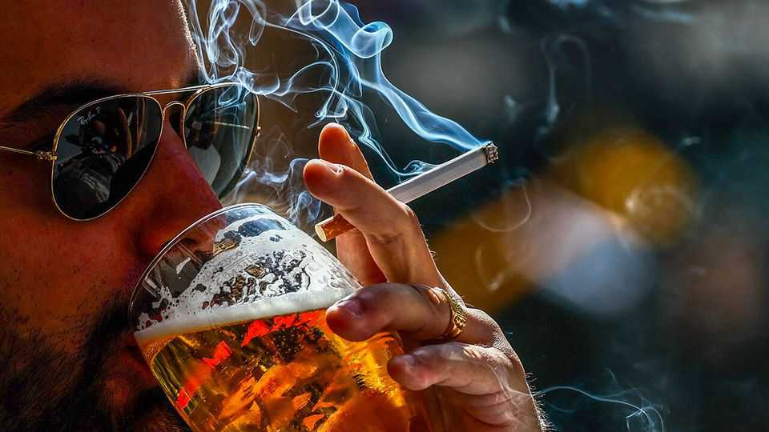

European countries are battling over rules on booze
Belgium wants advertisers to note that alcohol is bad for you, Italy does not

Aug 27th 2026
The World Cup was a bright moment both for Spain and for its drinks sales. On match days, profits in the country’s bars were 25-30% higher than average. But despite the sunny, beery terraces, a storm was brewing for Spain’s booze industry—and Europe’s. Sales of beer and wine have been sliding for years. Now some countries want to tighten regulations on alcohol.
In March Belgium told the European Commission it wanted to pass laws that prohibit advertising alcohol to minors. It also wants a blunter mandatory warning on advertising, stating that “alcohol is harmful to health.” (The current one states merely that “alcohol abuse harms your health.”) Wine-producing countries, including France, Italy, Romania and Slovakia, have filed objections. They say the Belgian laws would fragment the advertising market and erect barriers to foreign firms.
The provision causing the most alarm is the statement that alcohol inevitably causes harm. Brewers and vintners fear that shadowy public-health forces plan to do to booze what they did to tobacco: stigmatise it as poisonous and socially undesirable. Adding to the tension are cultural issues. In warm, relaxed Mediterranean countries, such as Italy, Portugal and France, alcoholic beverages are enjoyed with a meal or sipped on a terrace. The cold “vodka belt” countries, including the Baltics and Nordics, have long had cultures of heavy drinking of hard liquor, and government policies to discourage it.
Members of the European Parliament have pushed for continent-wide legislation to mandate warnings and ingredient lists on bottles. But Aurelijus Veryga, a Lithuanian MEP and former health minister, thinks cultural divisions make a tobacco-style agreement on alcohol unlikely. The commission has been promising booze regulation for years, but never seems to deliver. Deadlines for health warnings on alcohol set in its cancer plan of 2021 have gone unmet.
The diplomatic risks of regulating alcohol are clear. In 2018 Ireland became the first European Union member to mandate that bottles carry cancer warnings, a pregnancy warning and calorie and energy information. Italy responded by calling this an “attack” on Italian identity, heritage and the Mediterranean diet, and insisted that wine was a factor in well-being. It rallied other wine-producing nations, including France, Greece, Portugal and Spain, to object too. The Irish restrictions became law nonetheless, but America then complained that the rules constituted a trade barrier. The deployment of warning labels was subsequently deferred until 2028 (due to “economic circumstances”).
Countries that want to regulate alcohol might look to Lithuania. As health minister, Dr Veryga succeeded in passing wide-ranging restrictions, including a near-total ban on advertising and restricted hours for retail liquor sales. But he says this was only possible thanks to public demand after a series of horrendous incidents, including a drink-driving accident in which three children were killed by an off-duty policeman. “If society is not on your side, you have already lost,” he says, over a glass of alcohol-free beer.
In Belgium, the efforts are driven by Frank Vandenbroucke, the health minister, who has struggled to gain broad political support. He has the backing of public-health charities, which are concerned by growing evidence of alcohol’s harms, particularly in raising the likelihood of cancer. Rebecka Öberg of Movendi, a group that promotes alcohol- and drug-free lifestyles, says her organisation wants people to make educated decisions about drinking. That requires better labelling.

With regard to cancer, it is technically correct to say that there is “no safe level” of alcohol consumption. But there remains debate over the point at which the risk becomes meaningful. The incremental risks of drinking a few glasses of wine or beer a week, rather than none at all, might be so low as to render a warning that “alcohol is harmful to health” disproportionate. Europeans routinely engage in other behaviours that carry a non-zero cumulative risk of developing cancer, such as sunbathing, eating bacon and drinking coffee heated to more than 65°C.
The irony of Mr Vandenbroucke’s efforts is that Belgian alcohol consumption is falling anyway. Among members of the Organisation for Economic Co-operation and Development (OECD), a club of mostly rich countries, Belgium is one of the two countries whose consumption has decreased the most in the past decade. Lithuania, with its recently tightened laws, is the other. Indeed, the populations of most high-income countries are moderating their drinking habits, in part due to health concerns. The decline in beer consumption is especially sharp: it has slumped by 9.2% in the EU since 2019.
But in economic terms, every crisis is also an opportunity. Today nearly one of every 12 beers drunk across the EU is alcohol-free. The rise of 0.0% brew means that, no matter which side of the alcohol debate you sit on, you have something with which to toast. ■